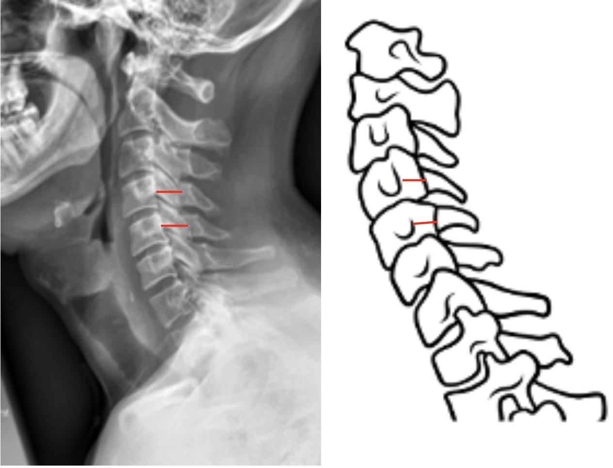
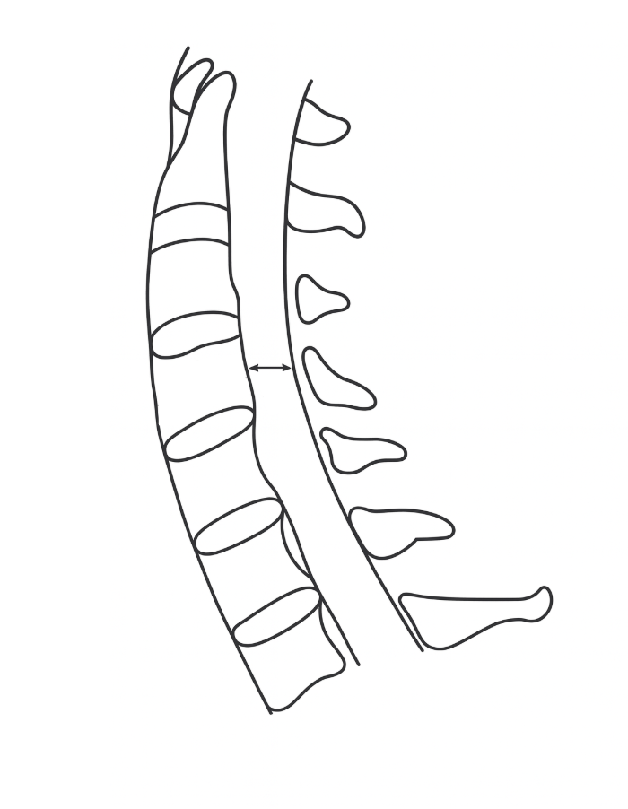
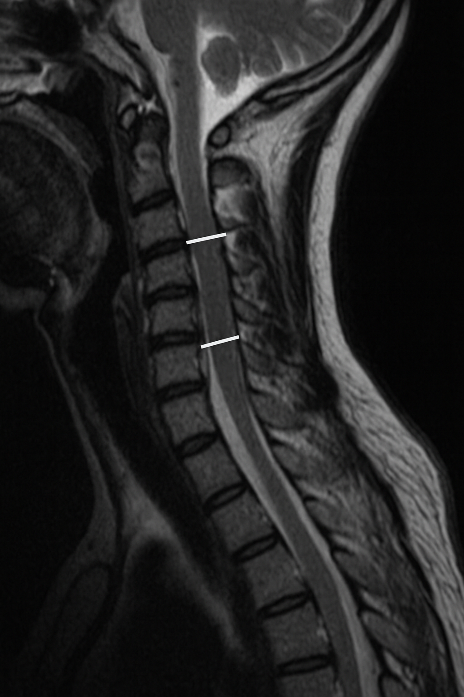

1) Description of Measurement
The Sagittal Canal Diameter (also known as the anteroposterior canal diameter) is a direct radiographic measurement of the bony spinal canal on a lateral cervical spine X-ray. It assesses the anteroposterior (AP) dimension of the spinal canal, which is crucial for detecting cervical canal stenosis, whether congenital or acquired. A reduced sagittal canal diameter correlates with spinal cord compression, myelopathy, and increased vulnerability to cord injury even after minor trauma.
This measurement is often complemented by the Pavlov/Torg Canal-to-Body Ratio, which normalizes for radiographic magnification and vertebral size.
2) Instructions to Measure
3) Normal vs. Pathologic Ranges
4) Important References
Pavlov H, Torg JS, Robie B, Jahre C. Cervical spinal stenosis: determination with vertebral body ratio method. Radiology. 1987 Sep;164(3):771-5. doi: 10.1148/radiology.164.3.3615879.
Hinck VC, Sachdev NS. Developmental stenosis of the cervical spinal canal. Brain. 1966 Mar;89(1):27-36. doi: 10.1093/brain/89.1.27.
Qudsieh H, Al-Rawashdeh I, Daradkeh A, et al. Variation of Torg-Pavlov ratio with age, gender, vertebral level, dural sac area, and ethnicity in lumbar magnetic resonance imaging. J Clin Imaging Sci. 2022 Sep 1;12:53. doi: 10.25259/JCIS_67_2022.
Lamothe G, Muller F, Vital JM, et al. Evolution of spinal cord injuries due to cervical canal stenosis without radiographic evidence of trauma (SCIWORET): a prospective study. Ann Phys Rehabil Med. 2011 Jun;54(4):213-24. English, French. doi: 10.1016/j.rehab.2011.02.003. Epub 2011 Mar 21.
5) Other info....
Direct measurement of sagittal canal diameter provides an absolute canal size but may vary with X-ray magnification; hence, many clinicians prefer the Pavlov/Torg Ratio as a normalized index.
MRI is the gold standard for assessing true spinal canal dimensions and cord compression, as it visualizes both bony and soft tissue structures.
CT is most accurate for bony canal assessment, particularly for evaluating congenital stenosis or ossification of the posterior longitudinal ligament (OPLL).
Dynamic flexion-extension X-rays can reveal positional narrowing in cases of ligamentous instability or spondylotic stenosis.
The C5–C6 level most commonly exhibits the smallest canal and is often the first site of symptomatic stenosis.
Congenital stenosis is defined by uniformly narrow canals, whereas acquired stenosis is usually segmental and associated with degenerative changes (osteophytes, disc protrusion).